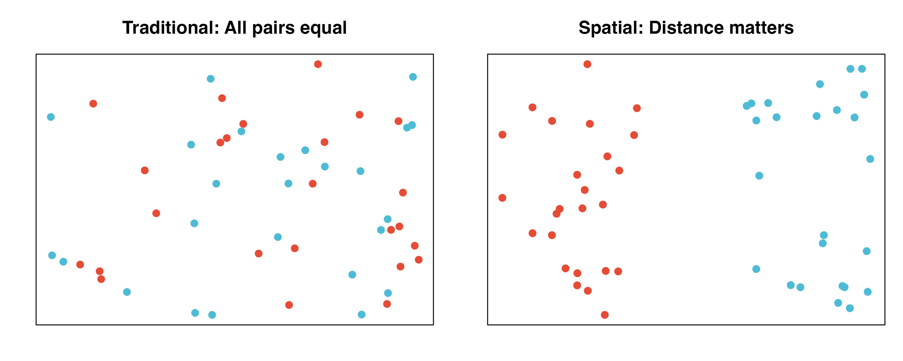

Overview
scMetaLink supports spatial transcriptomics data, enabling the analysis of metabolite-mediated cell communication with spatial context. This vignette demonstrates how to:
- Create a spatial scMetaLink object
- Compute spatially-weighted communication
- Visualize communication patterns on tissue coordinates
- Identify communication hotspots
Spatial Analysis Workflow
The following diagram illustrates the complete spatial transcriptomics analysis workflow in scMetaLink:

Figure 1: Spatial scMetaLink Workflow. Overview of the spatial transcriptomics analysis pipeline, from data input through spatially-weighted communication inference to visualization.
Spatial Communication Algorithm
scMetaLink incorporates spatial distance to weight cell-cell communication. The computational framework is illustrated below:

Figure 2: Spatial Communication Algorithm. Mathematical framework showing how spatial distances are incorporated into metabolite production, sensing, and communication score calculations.
Why Spatial Analysis?
Traditional single-cell analysis treats cells as independent units, ignoring their physical locations. However, metabolite signaling is fundamentally spatial:
- Metabolites diffuse through tissue with distance-dependent decay
- Nearby cells are more likely to communicate via metabolites
- Spatial organization of cell types affects signaling patterns
scMetaLink’s spatial module incorporates these biological realities.

Load Example Data
scMetaLink includes a colon spatial transcriptomics dataset for demonstration.
library(scMetaLink)
library(Matrix)
# Load spatial colon data
data(st_expr)
data(st_meta)
data(st_scalefactors)
# Check the data
cat("=== Spatial Transcriptomics Data ===\n")
#> === Spatial Transcriptomics Data ===
cat("Expression matrix:", dim(st_expr)[1], "genes x", dim(st_expr)[2], "spots\n")
#> Expression matrix: 4284 genes x 1000 spots
cat("\nSpot metadata:\n")
#>
#> Spot metadata:
head(st_meta)
#> x y array_row array_col cell_type
#> TAGTCCCGGAGACCAC-1 6642 13195 66 48 Endothelial
#> GTGCGTGTATATGAGC-1 10097 8796 41 83 Stromal
#> CCGGTATCTGGCGACT-1 10371 15069 77 85 Fibroblast
#> CCCAAGAATGCACGGT-1 10519 1993 2 88 Immune
#> CGAAACATAGATGGCA-1 9435 3574 11 77 Immune
#> TTCTTATCCGCTGGGT-1 11917 10169 49 101 Fibroblast
cat("\nCell type distribution:\n")
#>
#> Cell type distribution:
print(table(st_meta$cell_type))
#>
#> Endothelial Epithelial Fibroblast Immune Stromal Tumor
#> 174 189 232 145 133 127
cat("\nScale factors:\n")
#>
#> Scale factors:
print(st_scalefactors)
#> $spot_diameter_fullres
#> [1] 130.2321
#>
#> $tissue_hires_scalef
#> [1] 0.1220703
#>
#> $tissue_lowres_scalef
#> [1] 0.03662109
#>
#> $spot_diameter_um
#> [1] 55
#>
#> $pixels_per_um
#> [1] 2.367856Create Spatial scMetaLink Object
Use createScMetaLinkFromSpatial() to create an object
with spatial coordinates.
# Create spatial scMetaLink object
obj <- createScMetaLinkFromSpatial(
expression_data = st_expr,
spatial_coords = st_meta[, c("x", "y")],
cell_meta = st_meta,
cell_type_column = "cell_type",
scale_factors = st_scalefactors, # Important for correct distance calculation!
min_cells = 5
)
# Check the object
obj
#> scMetaLink Object
#> =================
#> Genes: 4284
#> Cells: 1000
#> Cell types: 6 (Endothelial, Stromal, Fibroblast, ...)Important: Coordinate Units
For 10x Visium data:
- Raw coordinates are in pixels, not micrometers
- You must provide
scale_factorswithpixels_per_umfor correct distance calculations - Without proper scaling, distance parameters (sigma, threshold) will be interpreted as pixels!
# Check spatial distance statistics
dist_stats <- getSpatialDistanceStats(obj)
cat("=== Spatial Distance Statistics ===\n")
#> === Spatial Distance Statistics ===
cat("Number of spots:", dist_stats$n_spots, "\n")
#> Number of spots: 1000
cat("Min distance:", round(dist_stats$min_distance_um, 1), "um\n")
#> Min distance: 84.5 um
cat("Median distance:", round(dist_stats$median_distance_um, 1), "um\n")
#> Median distance: 2558.5 um
cat("Max distance:", round(dist_stats$max_distance_um, 1), "um\n")
#> Max distance: 6864.2 um
cat("Coordinate unit:", dist_stats$coord_unit, "\n")
#> Coordinate unit: converted to micrometersWorking with Seurat Objects
If you have a Seurat spatial object, use
createScMetaLinkFromSeuratSpatial():
# From Seurat spatial object
obj <- createScMetaLinkFromSeuratSpatial(
seurat_obj = seurat_spatial,
cell_type_column = "cell_type", # Column with deconvolution results
assay = "Spatial",
image = "slice1" # Name of the spatial image
)Visualize Spatial Cell Types
Before analysis, visualize the spatial distribution of cell types.
plotSpatialCellTypes(obj, point_size = 2, alpha = 0.8)Figure 3: Spatial Cell Type Distribution. Each spot is colored by its assigned cell type. For Visium data, cell types typically come from deconvolution methods (RCTD, cell2location, etc.).
Infer Production and Sensing
Run the standard production and sensing inference.
# Infer metabolite production
obj <- inferProduction(
obj,
method = "combined",
consider_degradation = TRUE,
consider_secretion = TRUE,
verbose = TRUE
)
# Infer metabolite sensing
obj <- inferSensing(
obj,
method = "combined",
weight_by_affinity = TRUE,
include_transporters = TRUE,
verbose = TRUE
)Visualize Spatial Metabolite Patterns
Visualize production and sensing scores on spatial coordinates.
plotSpatialFeature(
obj,
metabolite = "L-Lactic acid",
type = "production",
point_size = 2
)Figure 4: Lactate Production Potential. Spots are colored by lactate production score based on their cell type. Warmer colors indicate higher production potential.
plotSpatialFeature(
obj,
metabolite = "L-Lactic acid",
type = "sensing",
point_size = 2,
low_color = "#EBF5FB",
high_color = "#1A5276"
)Figure 5: Lactate Sensing Capability. Spots are colored by lactate sensing score. This shows which regions can detect and respond to lactate signaling.
Compare Multiple Metabolites
plotSpatialComparison(
obj,
metabolites = c("L-Lactic acid", "L-Glutamic acid", "Adenosine", "L-Alanine"),
type = "production",
ncol = 2,
point_size = 1.5
)Figure 6: Spatial Comparison of Key Metabolites. Production patterns for multiple metabolites shown side by side, revealing distinct spatial organization of metabolic activities.
Compute Spatial Communication
The key innovation is spatially-weighted communication. Nearby cell type pairs receive higher communication scores.
Spatial Weighting Methods
scMetaLink offers several spatial weighting methods:
| Method | Formula | Best for |
|---|---|---|
knn |
K-nearest neighbors only | Visium (recommended) |
gaussian |
Smooth decay | |
exponential |
Sharp decay | |
linear |
Simple model | |
threshold |
Binary cutoff | Strict distance limit |
Figure 7: Spatial Weighting Functions. Different methods model the decay of communication potential with distance. KNN (not shown) uses a binary approach based on nearest neighbors.
Run Spatial Communication Analysis
For Visium data, we recommend the knn
method with k=6 (hexagonal grid neighbors):
# Compute spatially-weighted communication
obj <- computeSpatialCommunication(
obj,
method = "knn", # K-nearest neighbors (recommended for Visium)
k_neighbors = 6, # 6 neighbors for hexagonal grid
symmetric = TRUE, # Bidirectional communication potential
comm_method = "geometric", # sqrt(production x sensing)
min_production = 0.1,
min_sensing = 0.1,
n_permutations = 100, # Use >=1000 for publication
n_cores = 1,
seed = 42,
verbose = TRUE
)
#> | | | 0% | |= | 1% | |= | 2% | |== | 3% | |=== | 4% | |==== | 5% | |==== | 6% | |===== | 7% | |====== | 8% | |====== | 9% | |======= | 10% | |======== | 11% | |======== | 12% | |========= | 13% | |========== | 14% | |========== | 15% | |=========== | 16% | |============ | 17% | |============= | 18% | |============= | 19% | |============== | 20% | |=============== | 21% | |=============== | 22% | |================ | 23% | |================= | 24% | |================== | 25% | |================== | 26% | |=================== | 27% | |==================== | 28% | |==================== | 29% | |===================== | 30% | |====================== | 31% | |====================== | 32% | |======================= | 33% | |======================== | 34% | |======================== | 35% | |========================= | 36% | |========================== | 37% | |=========================== | 38% | |=========================== | 39% | |============================ | 40% | |============================= | 41% | |============================= | 42% | |============================== | 43% | |=============================== | 44% | |================================ | 45% | |================================ | 46% | |================================= | 47% | |================================== | 48% | |================================== | 49% | |=================================== | 50% | |==================================== | 51% | |==================================== | 52% | |===================================== | 53% | |====================================== | 54% | |====================================== | 55% | |======================================= | 56% | |======================================== | 57% | |========================================= | 58% | |========================================= | 59% | |========================================== | 60% | |=========================================== | 61% | |=========================================== | 62% | |============================================ | 63% | |============================================= | 64% | |============================================== | 65% | |============================================== | 66% | |=============================================== | 67% | |================================================ | 68% | |================================================ | 69% | |================================================= | 70% | |================================================== | 71% | |================================================== | 72% | |=================================================== | 73% | |==================================================== | 74% | |==================================================== | 75% | |===================================================== | 76% | |====================================================== | 77% | |======================================================= | 78% | |======================================================= | 79% | |======================================================== | 80% | |========================================================= | 81% | |========================================================= | 82% | |========================================================== | 83% | |=========================================================== | 84% | |============================================================ | 85% | |============================================================ | 86% | |============================================================= | 87% | |============================================================== | 88% | |============================================================== | 89% | |=============================================================== | 90% | |================================================================ | 91% | |================================================================ | 92% | |================================================================= | 93% | |================================================================== | 94% | |================================================================== | 95% | |=================================================================== | 96% | |==================================================================== | 97% | |===================================================================== | 98% | |===================================================================== | 99% | |======================================================================| 100%Alternative: Gaussian Decay
For more continuous distance weighting:
obj <- computeSpatialCommunication(
obj,
method = "gaussian",
sigma = 50, # 50 um characteristic decay
distance_threshold = 150, # Max communication distance
n_permutations = 100,
verbose = TRUE
)Filter Significant Interactions
# Filter significant spatial interactions
obj <- filterSignificantInteractions(
obj,
pvalue_threshold = 0.05,
adjust_method = "none" # Use "BH" for real analysis with more permutations
)
# View results
cat("Significant spatial interactions:", nrow(obj@significant_interactions), "\n\n")
#> Significant spatial interactions: 442
head(obj@significant_interactions[, c("sender", "receiver", "metabolite_name",
"communication_score", "pvalue_adjusted")])
#> sender receiver metabolite_name communication_score
#> 1 Stromal Fibroblast Prostaglandin F1a 0.9781756
#> 2 Stromal Stromal 20-Hydroxyeicosatetraenoic acid 0.9716861
#> 3 Fibroblast Stromal DG(18:0/18:2(9Z,12Z)/0:0) 0.9605915
#> 4 Stromal Stromal Prostaglandin I2 0.9602908
#> 5 Fibroblast Stromal Retinal 0.9583222
#> 6 Fibroblast Stromal DG(18:0/18:0/0:0) 0.9579443
#> pvalue_adjusted
#> 1 0.00990099
#> 2 0.00990099
#> 3 0.00990099
#> 4 0.01980198
#> 5 0.00990099
#> 6 0.00990099Visualize Spatial Communication Network
plotSpatialCommunicationNetwork(
obj,
metabolite = NULL, # Aggregate all metabolites
top_n = 15,
arrow_scale = 1.5,
point_size = 6,
show_labels = TRUE
)Figure 8: Spatial Communication Network. Arrows connect cell type centroids, with width proportional to communication strength. Background spots show the tissue context.
Metabolite-Specific Network
plotSpatialCommunicationNetwork(
obj,
metabolite = "L-Lactic acid",
top_n = 10,
arrow_scale = 2,
point_size = 6
)Figure 9: Lactate Communication Network. Spatial communication pattern for lactate specifically, showing which cell types communicate via this metabolite.
Analyze Communication Patterns
Top Spatial Interactions
sig <- obj@significant_interactions
# Top metabolites in spatial communication
cat("=== Top Metabolite Mediators (Spatial) ===\n")
#> === Top Metabolite Mediators (Spatial) ===
met_counts <- table(sig$metabolite_name)
print(head(sort(met_counts, decreasing = TRUE), 15))
#>
#> 24-Hydroxycholesterol
#> 5
#> DG(18:0/20:4(5Z,8Z,11Z,14Z)/0:0)
#> 5
#> Epinephrine
#> 5
#> L-Aspartic acid
#> 5
#> Prostaglandin D2
#> 5
#> Prostaglandin E2
#> 5
#> Adenosine
#> 4
#> Pentadecanoic acid
#> 4
#> 13-HODE
#> 3
#> 13-cis-Retinoic acid
#> 3
#> 17-Hydroxypregnenolone sulfate
#> 3
#> 17a-Hydroxypregnenolone
#> 3
#> 3 alpha,7 alpha,26-Trihydroxy-5beta-cholestane
#> 3
#> 3-Hydroxybutyric acid
#> 3
#> 5'-Deoxyadenosine
#> 3Cell Type Communication Summary
par(mfrow = c(1, 2))
# Outgoing (sender) strength
outgoing <- aggregate(communication_score ~ sender, data = sig, FUN = sum)
outgoing <- outgoing[order(-outgoing$communication_score), ]
barplot(outgoing$communication_score, names.arg = outgoing$sender,
las = 2, col = "#E64B35", main = "Outgoing Spatial Communication")
# Incoming (receiver) strength
incoming <- aggregate(communication_score ~ receiver, data = sig, FUN = sum)
incoming <- incoming[order(-incoming$communication_score), ]
barplot(incoming$communication_score, names.arg = incoming$receiver,
las = 2, col = "#4DBBD5", main = "Incoming Spatial Communication")
Communication Hotspot Identification
For spot-level analysis, scMetaLink can identify spatial hotspots of communication activity.
# Note: Requires running computeSpatialCommunication with analysis_level="spot"
obj_spot <- computeSpatialCommunication(
obj,
method = "knn",
k_neighbors = 6,
analysis_level = "spot", # Spot-level analysis
n_permutations = 0, # Skip permutation for speed
verbose = TRUE
)
# Identify hotspots
hotspots <- identifyCommunicationHotspots(
obj_spot,
metabolite = "L-Lactic acid",
type = "sender",
n_hotspots = 5
)
print(hotspots)
# Visualize hotspots
plotSpatialHotspots(obj_spot, metabolite = "L-Lactic acid", type = "sender")Spatial Distance Distribution
Understand the spatial relationships in your data:
plotSpatialDistanceDistribution(obj, max_distance = 1000, bins = 50)Figure 10: Spatial Distance Distribution. Histogram showing the distribution of pairwise distances between spots. Red lines mark common distance thresholds (100, 200, 500 um).
Parameter Guidelines
Complete Workflow Example
# Complete spatial analysis workflow
library(scMetaLink)
# 1. Load data
data(st_expr)
data(st_meta)
data(st_scalefactors)
# 2. Create spatial object
obj <- createScMetaLinkFromSpatial(
expression_data = st_expr,
spatial_coords = st_meta[, c("x", "y")],
cell_meta = st_meta,
cell_type_column = "cell_type",
scale_factors = st_scalefactors
)
# 3. Infer production and sensing
obj <- inferProduction(obj)
obj <- inferSensing(obj)
# 4. Compute spatial communication
obj <- computeSpatialCommunication(
obj,
method = "knn",
k_neighbors = 6,
n_permutations = 1000 # More permutations for publication
)
# 5. Filter significant interactions
obj <- filterSignificantInteractions(obj, adjust_method = "BH")
# 6. Visualize results
plotSpatialCellTypes(obj)
plotSpatialCommunicationNetwork(obj)
# 7. Export results
exportResults(obj, output_dir = "spatial_results")Key Differences from Non-Spatial Analysis
| Aspect | Non-Spatial | Spatial |
|---|---|---|
| Cell relationships | All pairs equal | Distance-weighted |
| Communication score | ||
| Visualization | Network/heatmap | Tissue coordinates |
| Biological meaning | Potential communication | Likely communication |
Limitations and Considerations
- Resolution: Visium spots contain multiple cells; cell type assignments are approximations
- Deconvolution: Use proper deconvolution methods (RCTD, cell2location) for cell type assignment
- Diffusion assumptions: Metabolite diffusion is simplified as distance-dependent decay
- 3D tissue: Current analysis is 2D; vertical diffusion is not modeled
Session Info
sessionInfo()
#> R version 4.4.0 (2024-04-24)
#> Platform: aarch64-apple-darwin20
#> Running under: macOS 15.6.1
#>
#> Matrix products: default
#> BLAS: /Library/Frameworks/R.framework/Versions/4.4-arm64/Resources/lib/libRblas.0.dylib
#> LAPACK: /Library/Frameworks/R.framework/Versions/4.4-arm64/Resources/lib/libRlapack.dylib; LAPACK version 3.12.0
#>
#> locale:
#> [1] C
#>
#> time zone: Asia/Shanghai
#> tzcode source: internal
#>
#> attached base packages:
#> [1] stats graphics grDevices utils datasets methods base
#>
#> other attached packages:
#> [1] Matrix_1.7-4 scMetaLink_1.0.0
#>
#> loaded via a namespace (and not attached):
#> [1] gtable_0.3.6 jsonlite_2.0.0 dplyr_1.1.4 compiler_4.4.0
#> [5] tidyselect_1.2.1 dichromat_2.0-0.1 jquerylib_0.1.4 systemfonts_1.3.1
#> [9] scales_1.4.0 textshaping_1.0.4 yaml_2.3.12 fastmap_1.2.0
#> [13] lattice_0.22-7 ggplot2_4.0.1 R6_2.6.1 labeling_0.4.3
#> [17] generics_0.1.4 knitr_1.51 htmlwidgets_1.6.4 tibble_3.3.1
#> [21] desc_1.4.3 bslib_0.9.0 pillar_1.11.1 RColorBrewer_1.1-3
#> [25] rlang_1.1.7 cachem_1.1.0 xfun_0.56 fs_1.6.6
#> [29] sass_0.4.10 S7_0.2.1 otel_0.2.0 cli_3.6.5
#> [33] withr_3.0.2 pkgdown_2.1.3 magrittr_2.0.4 digest_0.6.39
#> [37] grid_4.4.0 lifecycle_1.0.5 vctrs_0.7.0 evaluate_1.0.5
#> [41] glue_1.8.0 farver_2.1.2 ragg_1.5.0 rmarkdown_2.30
#> [45] tools_4.4.0 pkgconfig_2.0.3 htmltools_0.5.9